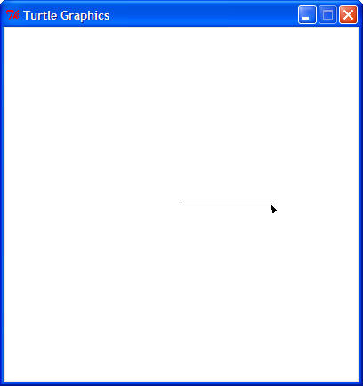
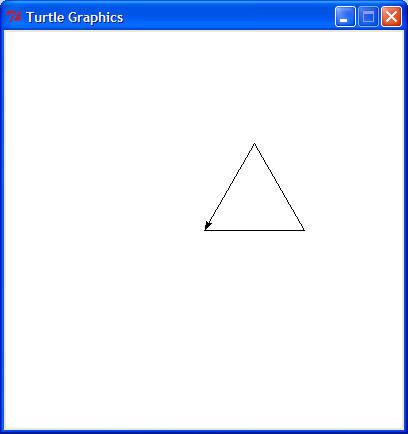
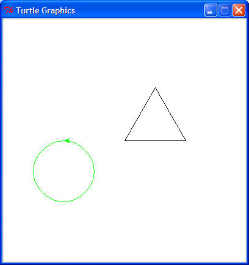
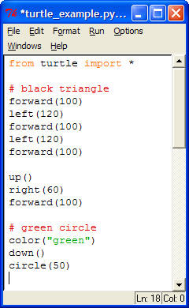
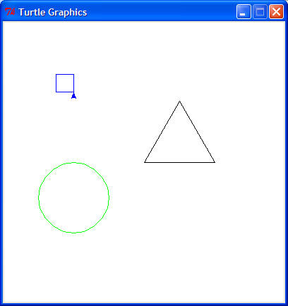

|
K-12 Computer Science Resources |
My own introduction to Computer Science (CS) came in the third grade (1979-1980) when our school superintendent acquired and allowed student access to a Tandy Radio Shack TRS-80 Model I microcomputer. Lacking curriculum and faculty expertise, students were given access, time, and models of simple game programs. These were then supplemented with hobbyist publications acquired by students. Learning was through example and play. Playful, creative development was both great fun and deeply educational. Good programmatic examples provided both the syntactic building blocks and algorithmic idioms for such development.
At first, game program listings in hobbyist magazines and books provided entertainment. One typed in a program and played with it. However, this entertainment came with many hooks for learning. As one entered a program, could one anticipate its behavior? Why did the program work? When it didn't work, how could the error be identified? Most often, this need for troubleshooting created great intrinsic motivation to understand the program and gain mastery of the basic idioms of programming. There were no assignments. I picked the coolest looking game, entered hundreds of lines of code, and invariably learned much from the entire exercise of observing the code as it was entered, troubleshooting it when there were errors in my entry or the code itself, and experimenting with creative modifications of the code. Many people learn well from good examples coupled with high intrinsic motivation.
What began as simple game and animation programming took on greater significance across my own curriculum. In fifth grade Mathematics, I was given time in math class to develop drilling software for ratio problems. In sixth grade Social Studies, I escaped a loathsome diorama project and was allowed the alternative exercise of creating a program to draw a cross section of the Great Pyramid. In eighth grade, as an extracurricular nonlinear writing exercise, I created text adventures, i.e. interactive fiction. In high school Physics, I computed orbital elements from observations. The cross-curricular possibilities are very exciting when children gain early exposure.
In retrospect, computer science and mathematics should be taught hand in hand. Some computer scientists could well be described as mathematicians with power tools. Alongside a standard mathematics curriculum a programming language can first serve as a calculator to check work and perform complex calculations. Many have observed that teaching a concept is one way to attain deeper learning. Aristotle noted that "Teaching is the highest form of understanding". Having a student program a computer to work through a mathematical algorithm constitutes a type of teaching. A student that correctly "teaches" a computer how to transform a mathematical expression understands the transformation intimately in all cases. Even more exciting is the possibility of students generating or processing empirical data to gain deeper understanding of many topics without tedium. With early exposure to programming constructs, beginning probability students can easily create dice-rolling simulations. Again, the possibilities are very exciting.
Ideally, students should first be exposed to programming as logical facilities reach sufficient development for simple logical reasoning. By fifth grade, according to Classical Education theory, students think more analytically, are more interested in asking "Why?", pay attention to cause and effect, and are capable of more analytic thought.
Exposure should begin in a gentle, user-friendly, high-level programming language that features:
Happily, the free Python programming language meets all of these requirements. See below for more details. "How To Think Like a Computer Scientist: Learning with Python" is a free online textbook.
Organizations:
Free resources:
Download and install Python.
Start the IDLE application. You will be presented with an interpreter window labeled "Python Shell" that can be used most primitively as a calculator. At the prompt ">>>", the user may enter one or more lines as an expression or command statement. The results of the computation is printed/displayed, and the user is then presented another prompt. This is sometimes referred to as a read-evaluate-print loop. Try entering the following math expressions, one per prompt:
1 + 2
2 + (3 * 4)
10 / 3
10 % 3
10.0 / 3
The result should look like this:
>>> 1 + 2
3
>>> 2 + (3 * 4)
14
>>> 10 / 3
3
>>> 10 % 3
1
>>> 10.0 / 3
3.3333333333333335
In the case of the third expression, two integers are divided and the remainder is thrown away. The modulus operator "%", used in the fourth expression, provides the remainder. A floating point number has a decimal point. The fifth expression shows two things:
Floating-point numbers result in floating-point division.
Floating-point division is not exact. (This is true for any calculator or computer, although some hide this fact better.)
Of course, many more mathematical operations are available in Python's math module. Each function or constant can be used by preceding it with "math." (e.g. math.sin, math.pi). Alternately, all of these definitions can be imported and more easily used without this prefix as shown here:
>>> from math import *
>>> sin(pi/2)
1.0
>>> log(e)
1.0
>>> sqrt(2)
1.4142135623730951
>>> pow(3, 2)
9.0
>>> degrees(pi)
180.0
>>> radians(45)
0.78539816339744828
Playing with turtle graphics is simple and fun. First, we import Python's turtle module:
>>> from turtle import *
Now imagine that you are a turtle holding a black pen on a piece of white paper. To make a line 100 units (pixels) long, the turtle moves the pen forward:
>>> forward(100)
(Your window size may vary.)
The turtle starts at the center of the window (pixel (0, 0)) headed to the right (0 degrees). (Note: Python's math uses radians, but Python's turtle uses degrees.) To turn the turtle left 120 degrees:
>>> left(120)

Repeating these two steps and going forward a third time completes a triangle:
>>> forward(100)
>>> left(120)
>>> forward(100)

To move the turtle without draw, we can lift the pen up:
>>> up()
Now we can turn to the right 60 degrees, go forward 100, change the pen color to green, put the pen down, and draw a circle with radius 50:
>>> right(60)
>>> forward(100)
>>> color("green")
>>> down()
>>> circle(50)

If we were making a complex drawing, we would want to save our work to be able to draw the same picture again. Also, by saving our commands, we can fix our mistakes easily without retyping the parts that are correct. To create a file, click "File" on the top menu bar of the Turtle Shell, and select "New Window". (You can also type Control-N.) Now copy the text below and paste it in the "Untitled" empty new window:
from turtle import *
# black triangle
forward(100)
left(120)
forward(100)
left(120)
forward(100)
up()
right(60)
forward(100)
# green circle
color("green")
down()
circle(50)
There are two things to notice. First, you will notice that different parts of your program are different colors. This is called syntax highlighting and makes the structure of your program easier to read. Second, you will notice that the title of the window is now surrounded by asterisks ("*Untitled*"), meaning there are unsaved changed. In the "*Untitled*" window, select "File" and "Save" (or just press Control-S) and save the file as "turtle_example.py". (Most Python program filenames end in ".py".) The new window should look something like this:

The red lines are comments and are ignored by Python. In fact, from a "#" to the end of the line is ignored by Python on any line. Comments are useful to express facts about the program to other programmers (or to remind yourself after time has passed). A good programmer writes to two audiences. Your first audience is the computer which cares only that the program is valid. (You care not only that it is valid but also that it does what you intend!) Your second audience is people who wish to understand your program, perhaps to use it, correct it, add to it, or learn from it. Communicating well to both audiences is an art.
To run this program, select "Run" and "Run Module" (or just press F5). You should see the same black triangle and green circle as before.
Now we can add onto our program and make it more
complex. There are many things we can do in Python, and a
tutorial or book (e.g. Python Programming: An Introduction to Computer Science).
Here we'll get just a tiny taste of Python programming to hint at possibilities.
Suppose we want to make many squares of size 25. It would be wearisome to go forward 25 and left 90 four times in succession each time you want to draw a square. Instead we can define a function square that will do that for us. Copy and paste this definition of the square function to your program:
def square():
forward(25)
left(90)
forward(25)
left(90)
forward(25)
left(90)
forward(25)
left(90)
Note: Each line after the first "def" line must be indented the same (with spaces or tabs) to be a valid Python program. If you're entering this in the Python Shell, a blank line will let the interpreter know that the definition is ended.
Here is an example use of our new square function. Add this code to the previous, save it, and run it.
up()
right(90)
forward(100)
color("blue")
down()
square()

Our last goal for now is to quickly draw 60 blue squares in a circle. That's a lot of repetition! Fortunately, there is an easy way to program repetition. To do something 60 times, one can simply type "for i in range(60):" and indent what is to be repeated on the lines that follow. For example, here we go forward 3, turn right 6, and draw a square. This is repeated 60 times. Try it out! (This time, I'm not going to show the result. You'll see it for yourself.)
speed("fastest")
for i in range(60):
forward(3)
right(6)
square()
In this loop, the variable i counts from 0 to 59. The loop stops repeating the indented commands when it reaches the value 60. There are other types of loops, types of data, ways to make decisions in a program, and many other interesting patterns for problem solving. As I said, this is just a tiny taste.
Now think of a drawing you would enjoy and challenge
yourself to make the turtle draw it. As you progress, explore other things
that Python's turtle module
can do. Then you can learn new things about Python in general from the
Python tutorial or a Computer Science
introduction that uses Python (e.g. Python Programming: An Introduction to Computer Science).
Enjoy!
Example code used above: turtle_example.py
Last updated 5 June 2008
Todd Neller